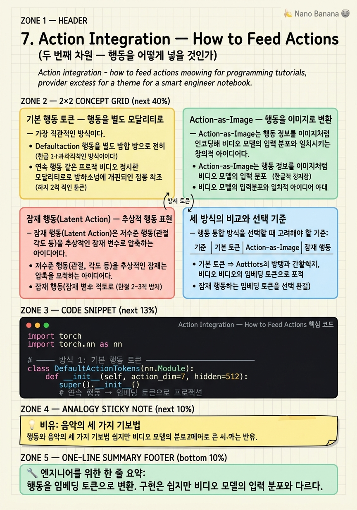

Action Integration — How to Feed Actions

🎯 학습 목표
- 행동을 별도 모달리티 토큰으로 처리하는 기본 방식을 이해한다
- Action-as-Image가 어떻게 동작하는지 설명할 수 있다
- 잠재 행동(Latent Action)의 아이디어와 장점을 이해한다
- 각 통합 방식이 어떤 모델에서 쓰이는지 연결할 수 있다
- 행동 통합 방식이 비디오 모델 파인튜닝에 미치는 영향을 설명할 수 있다
WAM의 두 번째 설계 차원은 "행동을 모델에 어떻게 넣을 것인가"다. 비디오 모델은 원래 이미지/비디오 데이터로 사전학습됐다. 여기에 로봇 행동(관절 각도, 그리퍼 상태 등)을 통합하는 방법이 WAM마다 다르다.
세 가지 주요 전략이 있다: 행동을 별도 토큰으로 처리하는 기본 행동 토큰, 행동을 이미지처럼 인코딩하는 Action-as-Image, 행동을 추상적 잠재 변수로 표현하는 잠재 행동. 각 전략은 비디오 모델의 사전학습 지식을 활용하는 방식이 다르고, 파인튜닝 비용, 행동 표현의 표현력, 일반화 능력에 서로 다른 트레이드오프를 갖는다.
이 챕터에서는 각 전략의 작동 원리와 대표 모델을 설명한다.
핵심 내용
기본 행동 토큰 — 행동을 별도 모달리티로
가장 직관적인 방식이다. 비디오 프레임 토큰과 함께 행동 토큰을 시퀀스에 포함시킨다. 예를 들어:
\[[v_0, v_1, \ldots, v_T, a_0, a_1, \ldots, a_{T-1}]\]
비디오 토큰 뒤에 행동 토큰이 따라오거나, 인터리브 형태로 섞인다. 행동은 연속 값을 이산화하거나(RT-2 방식) 플로우 매칭/확산으로 생성한다.
장점: 구현이 간단하고 기존 언어 모델 아키텍처를 그대로 활용할 수 있다.
단점: 행동 토큰이 비디오 모델의 입력 분포와 다르다. 비디오 모델은 픽셀/잠재 코드로 사전학습됐는데, 갑자기 다른 형태의 토큰이 들어오면 모달리티 갭이 발생할 수 있다.
LingBot-VA(2026)가 이 방식을 사용한다. Wan 2.2-5B를 백본으로 16k 시간의 크로스-에뮬레이션 데이터로 사전학습하고, 행동 토큰을 추가해 파인튜닝한다.
Action-as-Image — 행동을 이미지로 변환
Action-as-Image는 행동 정보를 이미지처럼 인코딩해 비디오 모델의 입력 분포와 일치시키는 창의적 아이디어다. 비디오 모델은 이미지 처리에 최적화되어 있으므로, 행동도 이미지처럼 표현하면 모달리티 갭을 줄일 수 있다.
GENIMA(2024)는 로봇 손목의 3D 목표 포즈를 RGB 이미지에 렌더링해 시각적 목표로 만든다. 「어떤 포즈로 가야 하는가」를 픽셀로 표현하는 것이다.
Cosmos Policy(2026)는 이를 더 발전시켜, 로봇 행동을 합성 잠재 프레임(synthetic latent frame)으로 인코딩한다. 실제 비디오 프레임은 아니지만 비디오 모델의 잠재 공간에서 유효한 표현으로 변환된다. 이를 통해: - 비디오 모델의 사전학습 지식을 최대한 활용 - 새로운 모달리티 헤드 없이 기존 아키텍처 그대로 사용 - 비디오-행동 정렬이 자연스럽게 이루어짐
단점: 행동을 이미지로 변환하는 렌더링/인코딩 과정이 필요하고, 연속 행동의 미세한 차이를 이미지로 충분히 표현하기 어려울 수 있다.
잠재 행동(Latent Action) — 추상적 행동 표현
잠재 행동(Latent Action)은 저수준 행동(관절 각도 등)을 추상적인 잠재 변수로 압축하는 아이디어다. 행동 인코더로 행동 시퀀스를 하나의 컴팩트한 벡터로 압축하고, 이 벡터를 비디오 모델에 조건으로 제공한다.
수식으로:
\[z = E_\phi(a_{0:T}), \quad \text{행동 시퀀스} \to \text{잠재 표현}\]
추론 시에는 역과정: \(z \to a_{0:T}\)
Play-LMP(2020)가 이 개념의 선구자다. 긴 행동 계획을 잠재 변수 \(z\)로 요약하고, 이를 조건으로 로봇이 다양한 방식으로 같은 목표를 달성할 수 있게 했다.
Being-H0.7(2026)은 이 개념을 V-JEPA 표현과 결합한다. V-JEPA가 제공하는 추상적 시각 표현 위에서 잠재 행동 사전(prior)과 사후(posterior)를 모델링한다. 세계 모형이 예측하는 미래와 실제 행동 잠재 변수 사이의 정합성을 학습하는 구조다.
장점: 행동의 고차원 의미("어떤 스타일로 작업을 완수할 것인가")를 표현할 수 있다.
단점: 잠재 공간 학습이 불안정할 수 있고, 해석 가능성이 낮다.
세 방식의 비교와 선택 기준
행동 통합 방식을 선택할 때 고려해야 할 기준:
| 기준 | 기본 토큰 | Action-as-Image | 잠재 행동 |
|---|---|---|---|
| 모달리티 갭 | 있음 | 작음 | 중간 |
| 표현력 | 직접적 | 이미지 해상도 제한 | 추상적, 높음 |
| 구현 복잡도 | 낮음 | 중간 | 높음 |
| 비디오 사전학습 활용 | 부분적 | 최대화 | 비디오 위에 추가 |
| 대표 모델 | LingBot-VA | GENIMA, Cosmos Policy | Play-LMP, Being-H0.7 |
2026년 연구 트렌드는 Action-as-Image와 잠재 행동 방향으로 기울어지고 있다. 두 방식 모두 비디오 모델의 내부 표현과 행동을 더 긴밀하게 통합하려는 시도다. 단순 토큰 추가의 모달리티 갭 문제를 더 근본적으로 해결한다는 평가를 받고 있다.
💡 비유로 이해하기
음악 연주자에게 악보를 전달하는 세 가지 방법을 생각해보자.
기본 토큰 방식은 표준 악보(Staff Notation)에 비유된다. 음표와 리듬을 표준 기호로 적어준다. 연주자(비디오 모델)는 원래 이 기보법에 최적화되어 있지 않았을 수 있어 처음 익히는 데 시간이 걸린다.
Action-as-Image 방식은 타블라처(Tab) 에 비유된다. 기타 TAB처럼, 어느 줄을 어디서 누르는지 그림으로 직접 보여준다. 연주자가 이미 그림을 읽는 데 최적화되어 있다면(비디오 모델), 자연스럽게 해석할 수 있다.
잠재 행동 방식은 즉흥 연주 지시에 비유된다. "슬픈 느낌으로 2분간 연주해"처럼 고차원 의도만 전달한다. 세부 음표는 연주자가 알아서 채운다. 표현력이 높지만 연주자가 충분히 숙련되어 있어야 한다.
💻 코드 예시
세 가지 행동 통합 방식의 핵심 구조를 코드로 비교해보자.
import torch
import torch.nn as nn
# ─── 방식 1: 기본 행동 토큰 ─────────────────────────
class DefaultActionTokens(nn.Module):
def __init__(self, action_dim=7, hidden=512):
super().__init__()
# 연속 행동 → 임베딩 토큰으로 프로젝션
self.proj = nn.Linear(action_dim, hidden)
def encode_actions(self, actions):
"""(B, T, 7) → (B, T, 512) 행동 토큰"""
return self.proj(actions)
# ─── 방식 2: Action-as-Image (Cosmos Policy 방식) ────
class ActionAsLatentFrame(nn.Module):
def __init__(self, action_dim=7, latent_spatial=16, latent_ch=4):
super().__init__()
self.latent_spatial = latent_spatial
self.latent_ch = latent_ch
# 행동 → 비디오 VAE 잠재 공간 크기로 변환
self.to_latent = nn.Linear(
action_dim, latent_spatial * latent_spatial * latent_ch
)
def encode_actions(self, actions):
"""
(B, T, 7) → (B, T, latent_ch, H, W)
비디오 프레임 잠재 코드와 동일한 shape → 모달리티 갭 최소화
"""
B, T, _ = actions.shape
latent = self.to_latent(actions)
return latent.view(B, T, self.latent_ch,
self.latent_spatial, self.latent_spatial)
# ─── 방식 3: 잠재 행동 (Play-LMP / Being-H0.7 방식) ─
class LatentActionModel(nn.Module):
def __init__(self, action_dim=7, chunk=20, latent_z=32):
super().__init__()
# 행동 시퀀스 → 컴팩트 잠재 벡터
self.encoder = nn.Sequential(
nn.Linear(action_dim * chunk, 256), nn.SiLU(),
nn.Linear(256, latent_z * 2) # mean + log_var
)
# 잠재 벡터 → 행동 시퀀스 복원
self.decoder = nn.Sequential(
nn.Linear(latent_z, 256), nn.SiLU(),
nn.Linear(256, action_dim * chunk)
)
self.chunk = chunk
self.action_dim = action_dim
def encode(self, actions):
B = actions.shape[0]
flat = actions.view(B, -1)
params = self.encoder(flat)
mean, log_var = params.chunk(2, dim=-1)
return mean, log_var
def reparameterize(self, mean, log_var):
std = (0.5 * log_var).exp()
return mean + std * torch.randn_like(std)
def decode(self, z):
actions = self.decoder(z)
return actions.view(-1, self.chunk, self.action_dim)
# 비교 실험
B, T = 2, 10
actions = torch.randn(B, T, 7)
default_model = DefaultActionTokens()
print('기본 토큰:', default_model.encode_actions(actions).shape) # (2, 10, 512)
image_model = ActionAsLatentFrame()
print('Action-as-Image:', image_model.encode_actions(actions).shape) # (2, 10, 4, 16, 16)
latent_model = LatentActionModel(action_dim=7, chunk=10)
mean, lv = latent_model.encode(actions)
z = latent_model.reparameterize(mean, lv)
print('잠재 행동 z:', z.shape) # (2, 32)세 방식의 핵심 차이가 출력 shape에서 드러난다. 기본 토큰은 (B, T, hidden) — 비디오 토큰과 같은 형태지만 다른 분포다. Action-as-Image는 (B, T, latent_ch, H, W) — 비디오 프레임 잠재 코드와 완전히 동일한 shape으로 모달리티 갭을 최소화한다. 잠재 행동은 (B, z_dim) — 행동 시퀀스 전체를 하나의 벡터로 압축한 추상적 표현이다.
🏭 현업에서의 평가
✅ 시니어가 보는 것
- 각 행동 통합 방식이 비디오 모델의 사전학습 가중치를 어떻게 활용/왜곡하는지 설명할 수 있는가
- Action-as-Image의 렌더링 과정에서 정보 손실 가능성을 인식하는가
- 잠재 행동의 VAE 학습에서 posterior collapse 문제를 알고 있는가
⚠️ 레드 플래그
- 세 방식의 트레이드오프를 모르고 "아무거나 쓰면 된다"고 하는 것
- Action-as-Image가 단순히 행동을 그림으로 그리는 것이라고만 설명하는 것
🎤 예상 인터뷰 질문
- Cosmos Policy의 합성 잠재 프레임 방식이 기본 행동 토큰보다 유리한 이유를 구체적으로 설명해보세요.
- 잠재 행동 모델에서 KL 발산 손실의 역할은 무엇인가요?
- 어떤 작업 유형에서 Action-as-Image 방식이 잠재 행동 방식보다 유리할까요?
✨ 핵심 요약
기본 토큰 = 단순하지만 모달리티 갭
행동을 임베딩 토큰으로 변환. 구현은 쉽지만 비디오 모델의 입력 분포와 다르다.
Action-as-Image = 모달리티 갭 최소화
행동을 비디오 잠재 프레임으로 변환해 비디오 모델이 자연스럽게 처리. Cosmos Policy가 대표.
잠재 행동 = 추상적 계획 표현
행동 시퀀스를 컴팩트 잠재 벡터로 압축. 고차원 행동 의미 표현 가능.
트렌드: 비디오-행동 정렬
2026년 연구는 비디오 모델의 내부 표현과 행동을 더 긴밀히 통합하는 방향으로 이동 중.
Being-H0.7의 접근
V-JEPA 표현 위에서 잠재 행동 사전/사후를 모델링하는 가장 통합된 형태.